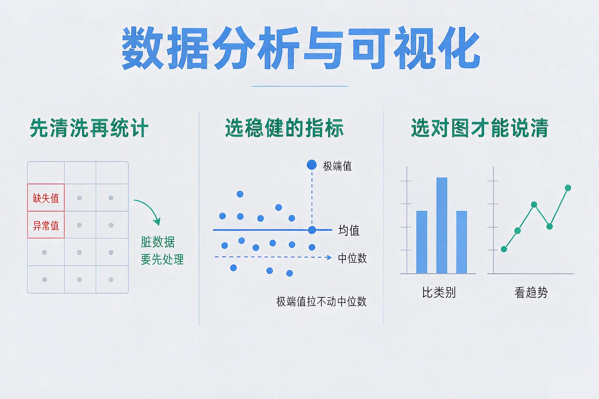
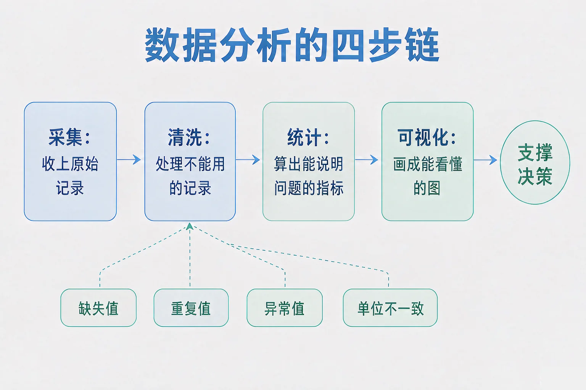
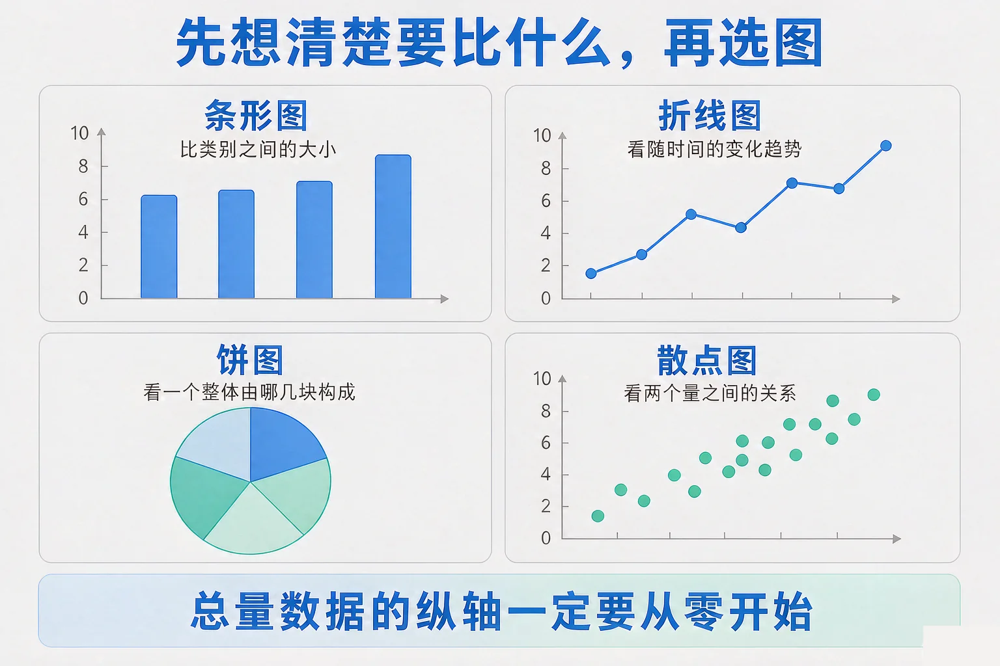

Gallery
v1.0.0 · skill v7.22.0
初中九年级 · 数据与算法
一份统计报告，被两句话问下来结论全变了——问题出在哪一步？

选一个你真正好奇的问题，后面的实验都会围着它转。
选择或输入后，这节课会围绕你的问题展开。
先凭直觉选一个，选完立刻看到解释——错了也没关系，正好知道要重点听哪里。
1. 拿到一份原始数据表，正确的处理顺序是：
清洗必须走在统计前面，否则后面算出的每个数都不可信。错因提醒：常见错误是误认为「先画图更快」——用脏数据画的图会先给一个错误的印象，后面很难改回来。
2. 一批成绩里有一条明显录错的异常大的数。下面哪个描述是对的？
均值对每个数平等对待，极端值会把它带偏；中位数只看排序后的中间位置。错因提醒：许多同学误认为「两个指标差不多」——数据一旦不对称，它们的差别会非常大。
3. 要展示「一周七天借阅量的变化」，最合适的图是：
看随时间的变化趋势用折线图；饼图看的是构成，散点图看的是两个量的关系。错因提醒：容易搞混的是把「能画出来」当成「画对了」——任何数据都能硬塞进任何一种图，但说不出结论就是在误导。
为什么要学这一课？你已经会用列表和字典把数据存起来，也知道程序能替人算数。但「会算」不等于「算对」——所以我们要走一遍完整链路：采集、清洗、统计、可视化，每一步都知道自己在做什么。
清洗要处理的四类脏数据：缺失值（格子是空的）、重复值（同一条记录出现两次）、异常值（数值不符合常识，多半是录入错误）、单位不一致（有的写秒有的写分）。

🔍 深层理解 换个角度再看一遍这件事，看看能不能说出背后的原理。
看见它：同一批数据，只报一个均值往往是不够的。均值、中位数、标准差三个数一起报，读者才能判断这批数据到底长什么样。
拆开它：清洗的每一个决定都是一次取舍：删掉会损失样本，填充会造出假数据。取舍的依据不是「哪个方便」，而是「缺失和异常是不是随机的」。
迁移它：先统一口径再比较，这个习惯不只用在数据里。两支队伍比成绩，也得先确认是不是同一套计分标准。
依次选定去重、异常值、缺失值的处理方式，每改一次，统计量都会用真实数据重新算一遍。请盯住均值和中位数的差距。
重复记录
异常值（一条 999 次的记录）
缺失值
两个读数相差 —（差得越大，说明数据越不对称、越可能藏着异常值）
数据洗好了，图怎么选？不是挑好看的，而是先想清楚你要比什么，再挑能表达它的那一种。
条形图 · 比类别
各类别之间谁高谁低，长短比面积更容易读准。
折线图 · 看趋势
横轴是有先后顺序的量（时间、序号）时用，走向和拐点最清楚。
饼图 · 看构成
一个整体分成哪几块。类别一多，小扇区就读不出差别了。
散点图 · 看关系
两个量的对应关系：一起变大、反向变化，还是看不出关系。

第一个常见错误是把无序的类别连成折线：图书类别之间没有先后，连起来读着像在讲「一路上升」，可这个上升根本不存在。第二个是纵轴不从零开始：最高 120、最低 42，真实的差距不到三倍，但如果纵轴从 40 起画，最低的那根就矮得几乎看不见，读起来像差了十倍——数字一个没改，被改的是读者的印象。第三个容易搞混的是把「图能画出来」当成「图画对了」：任何一组数据都能硬塞进任何一种图里，但表达不了要说的结论，就已经是在误导。
🔍 深层理解 换个角度再看一遍这件事，看看能不能说出背后的原理。
比较它：折线图和散点图都有「点」，区别在横轴：折线图的横轴是有序推进的（时间），散点图的横轴是另一个测量值。
迁移它：「先想清楚要回答什么问题，再挑工具」这条顺序，在数据分析里成立，在别的任务里同样成立。
先选一份数据，再挑一种图，看系统判定它能不能把结论说清楚；最后关掉「纵轴从零开始」，看同一组数据在视觉上被放大成什么样。
第一步：选择数据集
第二步：选择图表
题目：一份课间运动打卡表被交回来，里面混着一条完全重复的记录、一条数值明显不合理的记录、还有几个空格。请说明你会怎样一步一步处理，最后要报哪几个数。
很多同学误认为「异常值一律删掉就对了」。要分清两种情况：如果它是录入错误，剔除是对的；如果它反映的是真实情况——比如确实有一位同学成绩特别高——删掉它就是在掩盖事实，属于选择性处理数据。判断依据是「这个数在现实中有可能吗」，而不是「它看着顺不顺眼」。另一处容易搞混的是先统计后清洗：顺序反过来，你会先得到一个看着还行的均值，然后舍不得推翻它，最后把错误一路带到结论里。
先凭直觉选一个，选完立刻看到解释——错了也没关系，正好知道要重点听哪里。
1. 下面哪句话是正确的？
均值把每个数都算进去，所以极端值会影响它；中位数只看位置，因此稳健。错因提醒：常见错误是误认为「取平均最公平」——恰恰因为每个数都被算进去，一个错数才能把它带走。
2. 某个月只有十几人次记录，另一个月有上百人次。要比较两个班的完成率，下面哪种说法最站得住脚？
两种口径各自合理，差别在于人次权重不同。错因提醒：许多同学误认为「统计方法总有唯一正确答案」——口径是人选的，选完必须写出来。
3. 要展示一个班级里四种运动项目的参与人数多少，最合适的图是：
比类别之间的多少用条形图；项目之间没有先后顺序，连线会读出并不存在的趋势。错因提醒：容易搞混的是看到「四个数」就想连成折线——先问横轴有没有顺序。
切换月份范围和统计口径，看结论句怎么在两个班之间来回翻。屏幕上的数字全部来自下面这张表，没有任何预设结论。
统计范围
统计口径
当前口径：—
写下来，说给同桌听：为什么同一份数据能得出两个相反的结论？请用「口径」和「权重」这两个词把你的理由说完整，并写出你会怎样在报告里避免这件事。
先凭直觉选一个，选完立刻看到解释——错了也没关系，正好知道要重点听哪里。
1. 一批数据里有 8 条空记录、总共 120 条。选择「用均值填充」之后，最需要提醒读者的是：
填充会人为造出数据，样本量是变大了，但并没有增加真实信息。错因提醒：常见错误是误认为「数据越多越准」——填充出来的那 8 条不带来任何新信息，反而让标准差失真。
2. 一份报告写着「参与率提升了 3 倍」，配图是一张纵轴从 60% 起画的柱状图，实际是 62% 提升到 66%。问题出在：
总量类数据的纵轴必须从零开始，否则视觉比例会被夸大。错因提醒：容易搞混的是把这类问题当成「美工问题」——它改变的是读者得到的结论，属于数据表达的责任问题。
3. 统计一份全员体检数据时，发现一条身高 999 厘米的记录。最恰当的处理是：
处理异常值要留下痕迹：核对来源、说明处理方式和条数，结论才可复现。错因提醒：许多同学误认为「悄悄删掉最省事」——不说明的处理等于让读者无法判断结论是否可靠。
回到开头那份报告：它其实没算错。真正的问题是清洗被跳过了，指标只报了一个，口径也没写。补上这三件事，同一批数据就能支撑一个站得住的结论。
给别人讲一遍：请用「清洗、中位数、口径」这三个词，把一份脏数据处理成一份可用报告的过程讲清楚，并说明哪一步最容易出问题。
三层练习，做完第一、二层就算通关；第三层留给愿意继续探索的同学。
⭐ 基础巩固（必做）
⭐⭐ 能力应用（必做）
⭐⭐⭐ 迁移挑战（选做）
左边是学它之前要先会的，右边是学会之后可以继续探索的，下面是同一领域的伙伴知识。
图谱正在加载：首次进入需下载知识索引（约 1–3 秒），加载完成后本行会自动消失。